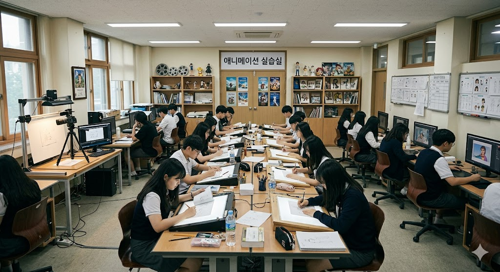
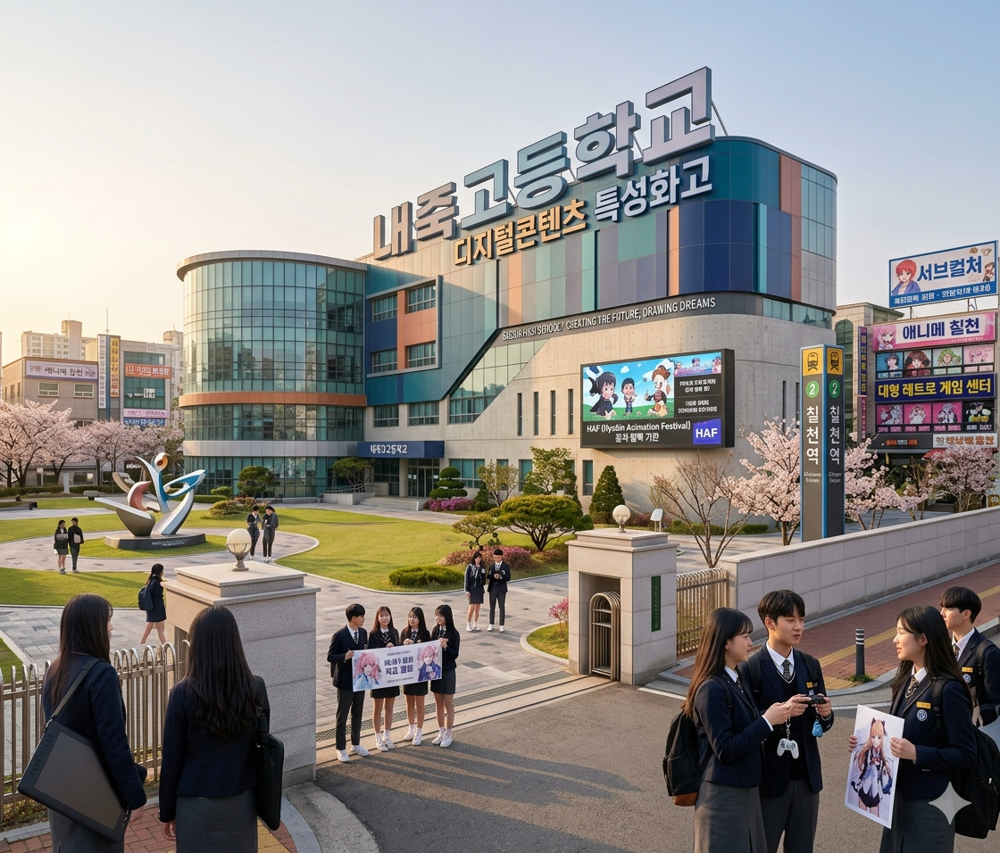

[교육] 효빈 애니메이션 특성화고 경쟁률 15:1... 역대 최고
입력 2026.05.07 13:00
서구 내죽고등학교 신입생 모집 마감... 디지털애니메이션과 등 지원자 쇄도
HAF 성공·L-Project 시너지로 서브컬처 산업 호황... '덕업일치' 유망 직종 급부상
"단순 취미 넘어선 고부가가치 전문직"... 전국 각지 우수 인재 효빈으로 몰려

[효빈일보 = 김교육 기자] 효빈광역시의 서브컬처 산업 호황이 지역 교육계의 지형도마저 완전히 바꿔놓고 있다. 효빈시를 대표하는 IT·콘텐츠 특성화고등학교인 서구 소재 내죽고등학교의 신입생 모집 경쟁률이 역대 최고치인 15대 1을 기록하며, 애니메이션 및 게임 산업에 대한 청소년들의 폭발적인 관심을 입증했다.
7일 효빈광역시교육청과 내죽고등학교에 따르면, 최근 마감된 2027학년도 신입생 일반 및 특별전형 원서접수 결과 전체 모집정원 200명에 3,000여 명의 지원자가 몰려 평균 15대 1의 경쟁률을 기록했다. 특히 학교의 핵심 학과인 '디지털애니메이션과'와 '스마트게임개발과'는 일찌감치 전공 포트폴리오를 철저히 준비해 온 전국 각지의 우수 인재들이 대거 지원하며 그 어느 때보다 치열한 입시 전쟁을 예고했다.
과거 전통적인 공업고등학교였던 내죽고등학교는 시대 흐름에 발맞춰 미디어, 게임, 애니메이션 등 첨단 지식 콘텐츠 중심으로 학과를 전면 개편하며 환골탈태한 바 있다. 이번 입시 대흥행의 가장 큰 요인은 단연 효빈시가 주도하고 있는 'L-Project(서브컬처 연계망 사업)'와 대규모 축제인 'HAF(효빈 애니메이션 페스티벌)'의 연이은 성공이 꼽힌다.

효빈시 전체가 거대한 서브컬처 생태계로 진화하고, 관련 IP(지식재산권) 산업이 지역 내총생산(GRDP) 역대 최고치를 견인하는 막대한 경제적 부가가치를 창출하면서 학생과 학부모들의 인식이 크게 변화한 것이다. 과거에는 '단순한 취미'나 '비주류 분야'로 치부되던 애니메이션과 게임 개발이, 이제는 뚜렷한 수요를 자랑하는 고소득 전문직이자 도시의 핵심 미래 유망 산업으로 확고히 자리 잡았음을 시사한다.
뛰어난 지리적 이점과 실무 중심의 교육 환경도 한몫했다. 서구 칠천동에 위치한 내죽고등학교는 도시철도 2호선 칠천역 일대의 거대 서브컬처 상권(애니메이션 굿즈 샵, 대형 레트로 게임 센터 등)과 인접해 있어, 학생들이 최신 문화 트렌드를 직접 체감하고 실무 감각을 익히기에 최적화된 입지 조건을 자랑한다.
또한 박효빈 시장이 적극 추진 중인 '덕업일치 창업 지원센터' 등 다양한 청년 취·창업 인프라와 맞물려, 강도 높은 포트폴리오 실습을 마친 졸업생들이 지역 내 우수 콘텐츠 제작사 및 스튜디오로 매끄럽게 취업 연계가 이루어지고 있다는 점도 지원자들을 끌어모은 킬러 콘텐츠가 되었다.
효빈시교육청 관계자는 "내죽고등학교의 이례적인 입시 경쟁률은 맹목적인 대학 진학의 굴레에서 벗어나, 자신의 확고한 적성과 취향을 바탕으로 일찌감치 전문성을 확보하려는 학생들의 실용주의적 진로 선택이 주류가 되고 있음을 보여준다"며, "효빈시의 탄탄한 서브컬처 산업 인프라와 학교의 수준 높은 실무 교육이 시너지를 극대화할 수 있도록, 교육청 차원에서도 최신형 액정 태블릿 지원 등 첨단 실습 장비 확충과 산학 협력 프로그램을 전폭적으로 확대할 계획"이라고 밝혔다.
문화 자본이 곧 가장 강력한 경제 자본이 되는 시대, 효빈시의 청소년들은 이미 자신들이 열광하는 서브컬처를 바탕으로 가장 확실하고 주도적인 미래를 설계해 나가고 있다.